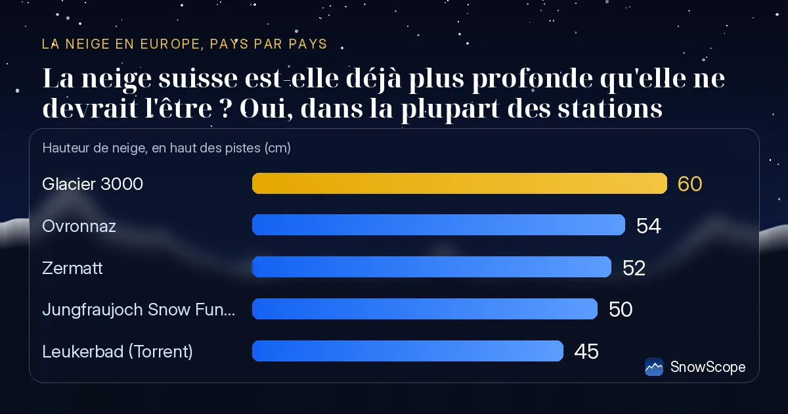

La neige suisse est-elle déjà plus profonde qu'elle ne devrait l'être ? Oui, dans la plupart des stations
Les montagnes suisses conservent une neige rare pour la mi-novembre. À Glacier 3000, la profondeur mesurée de 60 cm est le double de ce que nous voyons habituellement à ce stade de la saison, et quatre des cinq principales stations mesurées affichent des valeurs supérieures à leur moyenne long terme.
Consultez les prévisions neige en temps réel pour Glacier 3000 sur l'application SnowScopeHauteurs de neige, alertes poudreuse et carte 3D, gratuitement.
Une neige déjà abondante pour la saison
La neige de novembre est fine sur la plupart des Alpes, mais la Suisse fait exception en ce moment. L'eau stockée dans les montagnes au-dessus de 2 000 m équivaut à ce que nous voyons pendant les trois meilleures semaines de janvier. À Glacier 3000 (mesurée à 2 238 m), les 60 cm de neige au sol représentent 246 pour cent de ce que nous mesurons habituellement à cette date. Ovronnaz, à 1 898 m, affiche 54 cm, aussi plus du double de la moyenne. Même à des altitudes plus basses, la neige s'accumule plus vite que les archives climatiques ne le suggèrent.
Cette profondeur précoce compte pour l'approvisionnement en eau. La neige d'automne et début d'hiver alimente les rivières et remplit les réservoirs lors de la fonte printanière. Quand la neige de novembre est aussi épaisse, cela signifie que le manteau neigeux commence la saison avec plus d'eau stockée que d'habitude.
| Station | Aujourd'hui | Normale à cette date | Part de la normale |
|---|---|---|---|
| Glacier 3000 | 59 cm | 24 cm | 246 % |
| Ovronnaz | 41 cm | 20 cm | 205 % |
| Zermatt | 221 cm | 31 cm | 713 % |
| Jungfraujoch Snow Fun Park | 67 cm | 74 cm | 91 % |
| Leukerbad (Torrent) | 24 cm | 17 cm | 141 % |

Où l'eau de neige est concentrée
La neige la plus épaisse se trouve en altitude. Au-dessus de 2 500 m, SnowScope montre une profondeur moyenne de 27 cm sur toute la zone suisse, et toutes les pentes sont enneigées. Entre 2 000 et 2 500 m, la moyenne est de 14 cm. Au-dessous de 2 000 m, la neige diminue rapidement : à 1 500 à 2 000 m, seulement 7 cm en moyenne. La limite de la neige se situe à 1 300 m ; en dessous, le sol est principalement nu.
Les Alpes valaisannes retiennent le plus de neige par rapport aux précipitations. Au cours des 72 dernières heures, cette région a accumulé 151 cm de neige nouvelle sur les hauts pics. L'Oberland bernois a enregistré 99 cm pendant la même période. Ces zones stockent actuellement la majeure partie de l'eau.

Les cinq profondeurs mesurées les plus élevées
Glacier 3000 est en tête avec 60 cm, suivi d'Ovronnaz avec 54 cm et Zermatt avec 52 cm. Jungfraujoch Snow Fun Park affiche 50 cm, et Leukerbad (Torrent) en compte 45 cm. Les cinq sites ont reçu une neige nouvelle importante au cours des trois derniers jours : Glacier 3000 a gagné 94 cm, Ovronnaz 79 cm, et Zermatt 76 cm. Ce ne sont pas des mesures aberrantes ; elles reflètent une impulsion régionale de neige mouillée qui a commencé il y a plusieurs jours et qui se propage encore sur les Alpes.
Profondeurs de neige par tranche d'altitude
À 500 à 1 000 m, il n'y a pas de neige au sol. Entre 1 000 et 1 500 m, seulement 40 pour cent de la zone est enneigée et la profondeur moyenne est de seulement 1 cm. La limite critique se situe à 1 500 m : au-dessus, une couverture neigeuse de 100 pour cent commence, et les profondeurs augmentent régulièrement avec l'altitude. Cette transition nette est typique de novembre, quand la troposphère est encore chaude aux basses altitudes mais déjà assez froide pour conserver la neige sur les sommets.
Ce qui vient ensuite
La prévision annonce jusqu'à 125 cm de neige nouvelle au cours des sept prochains jours, le jour le plus important étant probablement le 22 novembre (38 cm). Au cours des trois prochains jours, les stations peuvent s'attendre à 55 à 87 cm d'accumulation nouvelle selon le lieu. Cela portera le stockage total de neige bien au-dessus du repère neuf hivers sur dix. L'équivalent en eau de cette neige fraîche sera significatif pour le débit printanier et les niveaux des réservoirs.
Début décembre, le signal de prévision s'affaiblit. SnowScope montre seulement 27 cm de neige nouvelle attendus entre le 27 novembre et le 3 décembre, ce qui suggère que l'événement neigeux principal est concentré dans la semaine à venir.
Tendance sur quatre jours
La couverture neigeuse en Suisse s'est accrue de 1 980 kilomètres carrés au cours des 24 dernières heures seulement et s'est étendue de 5 110 kilomètres carrés au cours de la dernière semaine. Le 16 novembre, Ovronnaz menait le pays avec 136 cm. Le 19 novembre, Glacier 3000 était passé en tête avec 60 cm à son point de mesure. Ce changement reflète la distribution inégale des chutes de neige récentes : différentes régions reçoivent des quantités différentes, et les sites de mesure à différentes altitudes peuvent montrer des signaux différents.
Conseils aux skieurs
- Consultez le bulletin officiel d'avalanche avant de partir en randonnée au-dessus de 2 000 m ; la neige nouvelle mouillée sur les pentes raides présente un risque d'avalanche. La neige nouvelle est chargée en eau.
- La neige de début de saison au-dessous de 1 500 m est fine et peut cacher des rochers. Restez sur les pistes balisées et sur un terrain connu si vous vous aventurez au-dessous de la limite de neige à 1 300 m.
- Sur les hauts glaciers (au-dessus de 2 500 m), une profondeur moyenne de 27 cm offre une bonne base, mais le risque de crevasse demeure ; les déplacements en cordée et l'entraînement sont essentiels.
- Les opérateurs de réservoirs doivent noter que la neige de cette semaine ajoutera de l'eau de fonte importante au printemps. L'eau stockée maintenant est au-dessus de la normale neuf hivers sur dix.
- Utilisez la carte de SnowScope pour trouver la neige la plus profonde à votre altitude choisie. Au-dessus de 2 500 m, toutes les pentes sont enneigées et stables. Entre 2 000 et 2 500 m, choisissez les pentes nord pour une profondeur plus fiable.
À propos de ces chiffres
Les hauteurs de neige des stations sont la neige la plus épaisse sur le haut du domaine à la date indiquée ; ce sont des estimations pour une zone, pas une mesure en un point. Les prévisions peuvent changer. Consultez toujours le bulletin d'avalanche officiel avant le hors-piste.
Citer ce bulletin
Pour la recherche, l'enseignement ou la presse : chiffres et graphiques réutilisables librement sous CC BY 4.0 avec cette citation.
SnowScope (2026), La neige suisse est-elle déjà plus profonde qu'elle ne devrait l'être ? Oui, dans la plupart des stations, https://snowscope.app/blog/fr/2026/11/switzerland-rare-early-snow-19-november-2026.html, consulté le 2026-11-19
SnowScope (Atlas Labs). (2026, November 19). La neige suisse est-elle déjà plus profonde qu'elle ne devrait l'être ? Oui, dans la plupart des stations. SnowScope snow reports. https://snowscope.app/blog/fr/2026/11/switzerland-rare-early-snow-19-november-2026.html
BibTeX
@misc{snowscope2026switzerlandrareearlysnow,
author = {{SnowScope (Atlas Labs)}},
title = {La neige suisse est-elle déjà plus profonde qu'elle ne devrait l'être ? Oui, dans la plupart des stations},
year = {2026},
month = nov,
howpublished = {\url{https://snowscope.app/blog/fr/2026/11/switzerland-rare-early-snow-19-november-2026.html}},
note = {Published 2026-11-19 11:34 UTC; accessed 2026-11-19}
}· CC BY 4.0 · Méthodes, données et outils →
Glacier 3000 : neige et température selon l'altitude, cet hiver vs l'hiver dernier (outils) →
Suivre Glacier 3000
Gratuit : un message quand la neige arrive, et la météo chaque matin.